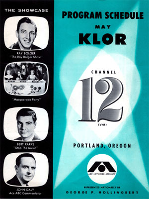

|
|  |
|
|
The
cover
of
an early KLOR
program
schedule,
May
1955. |
|
KLOR Program Schedules
Presented here is a sampling of
KLOR's programming during its 26 months of broadcasting. Beginning
as an ABC affiliate in March of 1955, KLOR became Portland's first
independent station in December 1956, when KGW (8) went on the air.
May 1955
Fall 1955
Fall 1956
February 1957
|
 |
 


This
page
last
updated
on
August 23, 2025 |
|
Yesterday's KPTV Website design and content ©2003-2025 by Ron Dunevant, LLC unless otherwise noted.
This website is not affiliated with or operated by KPTV or its parent company, Gray Television.
Please direct any inquiries to: yesterdayskptv@gmail.com. |
| |